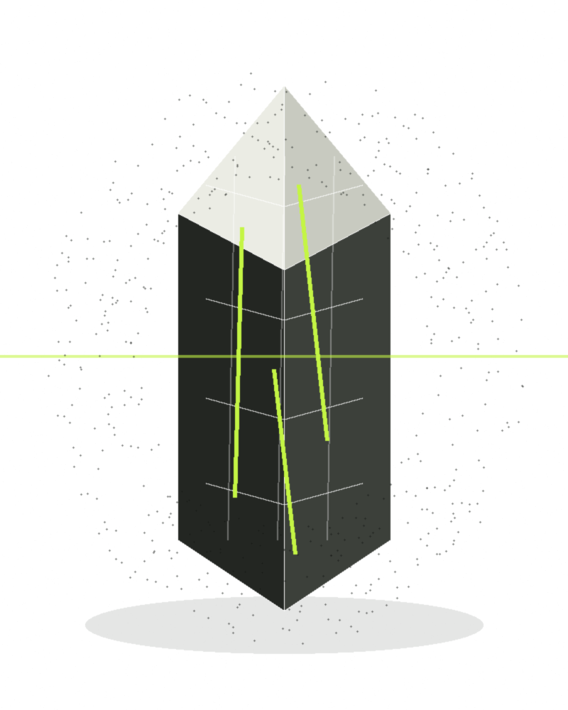

Investigatingthe boundariesof systems.
Independent vulnerability analysis, reverse engineering, and incident response documentation. Every analysis is published after a vendor patch or responsible disclosure, with detection artefacts and mitigation steps defenders can use on day one.

One analysis, complete.
One publication receives full width. Everything else is an index entry. No invented metrics; every claim links to evidence.
CVE-2025-20281 — Unauthenticated RCE in Cisco ISE
Input validation failure in the Cisco ISE management API allows unauthenticated command execution with elevated privileges. CVSS 10.0.
Read the full analysisWhat I actually work on
Four lanes, one standard: publish only when the finding is verified, the fix is shipped, and a defender can detect the risk without re-running the attack.
Recent posts
The two published analyses. Open either for the full writeup, figures, and detection artefacts.
Checked-out experiments.
Only real repositories. One featured, the rest as index lines — status included, no invented claims.
oh-my-pi
⌥ Coding agent with the IDE wired in. Built by Stencil Labs.
EWHT obfuscation, dissected.
Signal processing as an evasion surface.
void fwht(int *x, int n) {
for (int h = 1; h < n; h <<= 1)
for (int i = 0; i < n; i += h << 1)
for (int j = 0; j < h; j++) {
int a = x[i + j], b = x[i + j + h];
x[i + j] = a + b; x[i + j + h] = a - b;
}
}Integer-only butterfly. No S-boxes, no crypto constants, no math library. Full technique note ↗